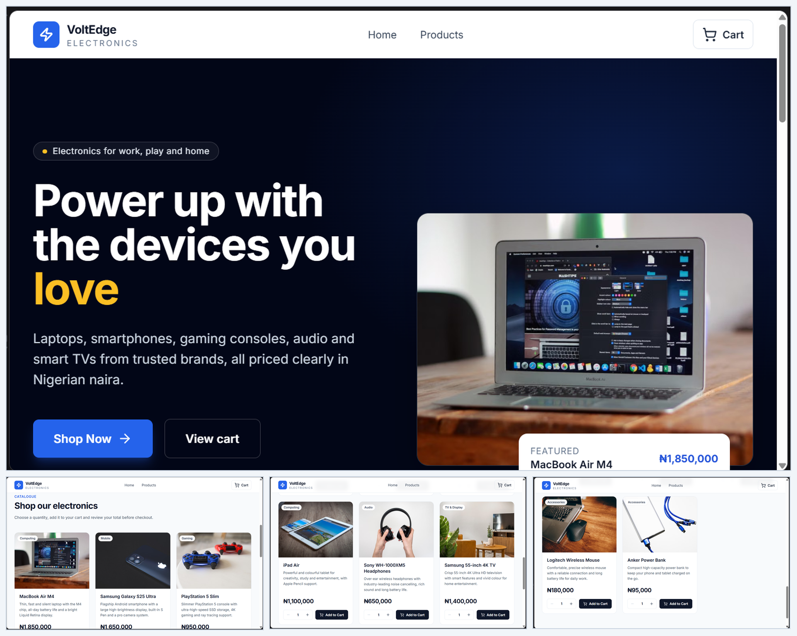
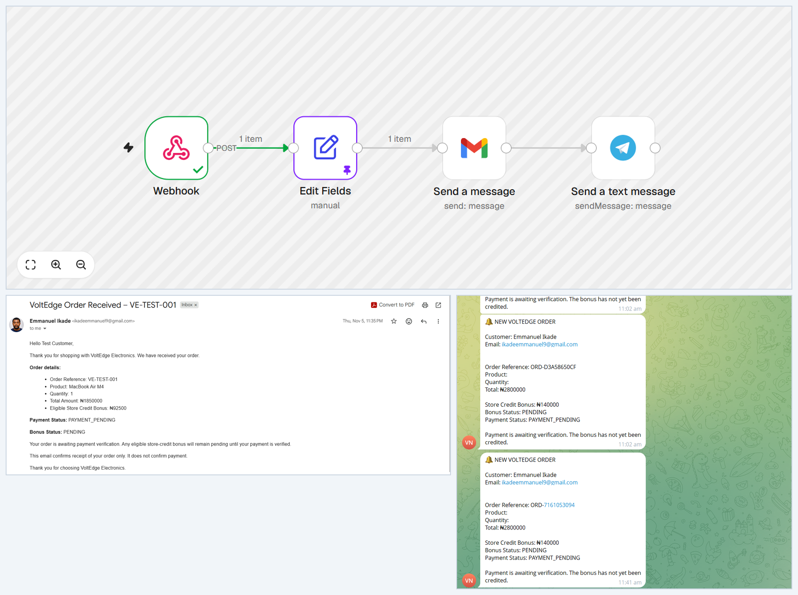
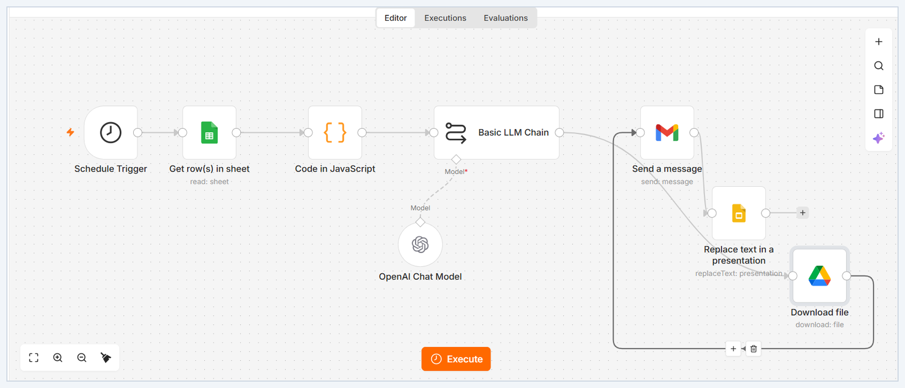

Projects from different datasets
Data visualization and analysis project using various datasets

A selection of my data analytics dashboards, SQL analyses and AI automation workflows, turning raw data into
clear insights and manual processes into automated systems.
.
Data visualization and analysis project using various datasets

These dashboards were designed using Power BI to provide an overview of business performance by monitoring revenue, profit, orders, customer segments, and regional profitability to identify key growth opportunities. Also to analyze product-level performance by identifying the most profitable products, tracking sales contribution, and supporting inventory and product strategy decisions.

In this project, I analyzed employee attrition and retention data to better understand workforce trends and turn raw HR data into meaningful insights. The dashboard highlights key metrics such as attrition rate, department-wise trends, job roles, demographics, education fields, survey scores, and recent attrition patterns. My goal was to present complex HR data in a simple and interactive visual format that helps identify areas affecting employee retention and engagement. Working on this project helped me strengthen my skills in data cleaning, analysis, storytelling, and dashboard design.

The data for Café Harmony was gathered from the café’s daily business operations across all locations, highlighting sales trends, customer preferences, stock status, employee performance, and customer ratings. The café generated strong revenue with steady monthly sales, while products like muffins and cappuccino emerged as customer favorites. Inventory analysis shows both high-performing and low-performing stock items, helping management optimize supply levels. Employee performance metrics and customer ratings further support operational insights and service improvement decisions. This dashboard was designed using Microsoft Excel.

This SQL query was written to identify employees with low performance scores who may be at risk of leaving, helping HR teams focus on employee retention strategies.

This SQL analysis was created to compare departments based on the number of top-performing and low-performing employees to better understand departmental performance trends.

This SQL query was performed to analyze the relationship between employee salaries and performance across departments using averages and correlation analysis.



This scheduled workflow produces reports without manual effort. It starts automatically on a timer, reads the latest data from Google Sheets and processes it with a JavaScript step. An OpenAI language model then writes a clear, business-friendly summary of the numbers. The summary is emailed through Gmail, the results are inserted into a Google Slides report template, and the finished file is exported from Google Drive for sharing. It saves hours of report writing each cycle and gives decision makers a consistent report on time, every time.